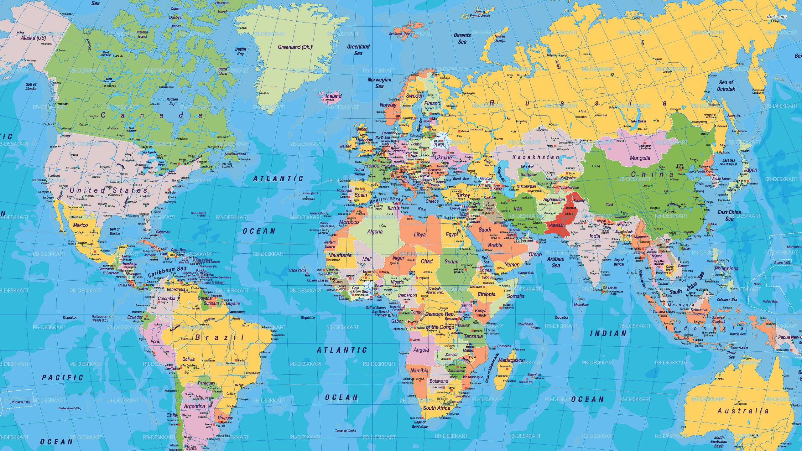

מסע בין חמישה מקומות מדהימים בעולם
באתר זה תוכלו לסייר בחמישה מהמקומות המרהיבים ביותר שביקרתי בהם בחיי. לחצו על אחד הקישורים בתפריט למעלה, או לחצו על אחד האזורים בתמונה המפורטת למטה כדי להגיע לדף המיוחד של כל עיר.

לחצו על אחד מהאזורים במפה כדי לעבור לדף העיר המתאימה